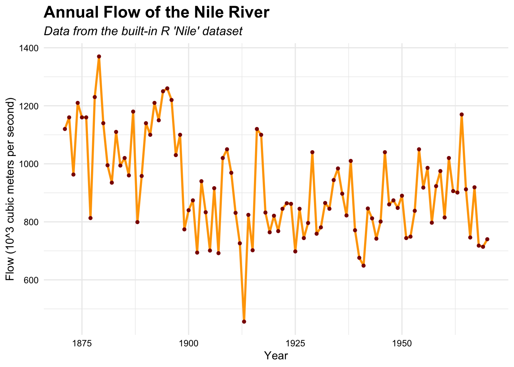
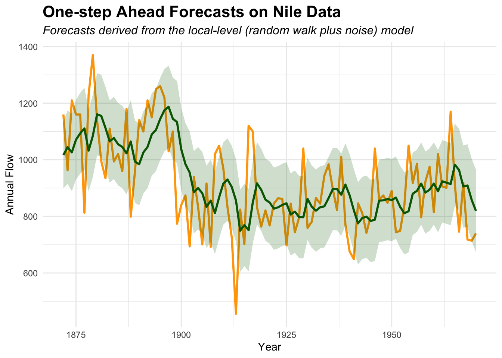
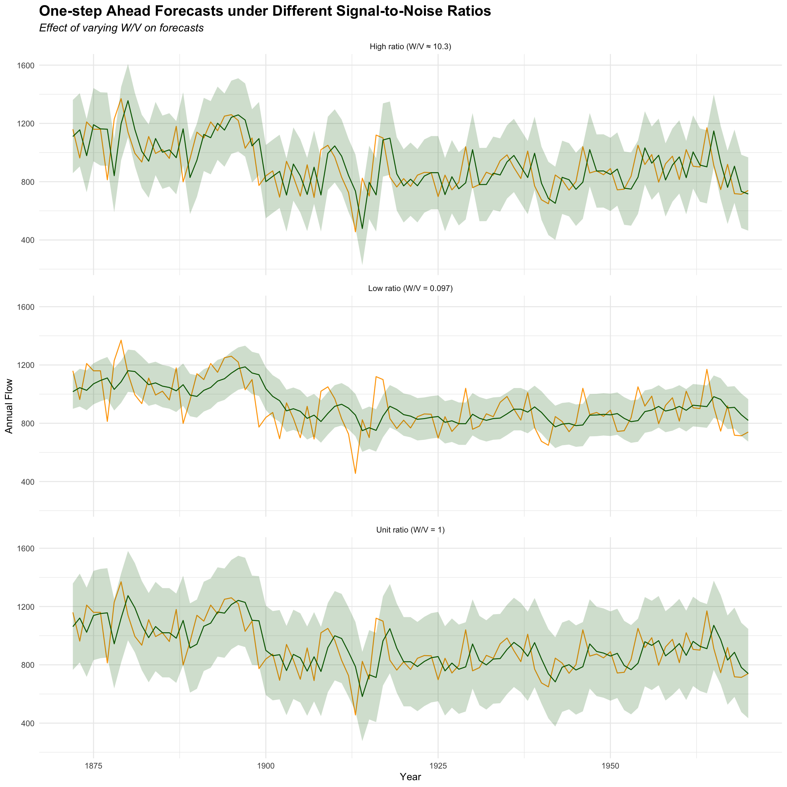

# For fancy plotslibrary(ggthemes)# Necessary packages for viridislibrary(viridisLite)library(viridis)library(gridExtra)
Attaching package: 'gridExtra'
The following object is masked from 'package:dplyr':
combine
library(magrittr)
Attaching package: 'magrittr'
The following object is masked from 'package:tidyr':
extract
library(textab)# Packages related to tidyverse, for data manipulationlibrary(tidyverse) # includes (lubridate), (dplyr), (ggplot2), (tidyr), (tidyselect)
── Conflicts ────────────────────────────────────────── tidyverse_conflicts() ──
✖ ggplot2::%+%() masks dlm::%+%()
✖ dplyr::collapse() masks nlme::collapse()
✖ gridExtra::combine() masks dplyr::combine()
✖ magrittr::extract() masks tidyr::extract()
✖ dplyr::filter() masks stats::filter()
✖ dplyr::first() masks xts::first()
✖ tsibble::interval() masks lubridate::interval()
✖ dplyr::lag() masks stats::lag()
✖ dplyr::last() masks xts::last()
✖ dplyr::select() masks MASS::select()
✖ purrr::set_names() masks magrittr::set_names()
ℹ Use the conflicted package (<http://conflicted.r-lib.org/>) to force all conflicts to become errors
library(tinytex)# To handle time changeslibrary(timechange)# To solve conflictslibrary(conflicted)conflicts_prefer(dplyr::filter)
[conflicted] Will prefer dplyr::filter over any other package.
Kalman lter for the random walk plus noise model
Consider the Nile data (measurements of the annual ow of the river Nile at Ashwan 1871-1970), available in R (> ?Nile).
First, plot the data. The series clearly appears non-stationary, presenting a quite evident change point. A local level model, i.e. a random walk plus noise, may be used to capture the main change point and other minor changes in the level of the Nile river. Let us consider the following random walk plus noise model.
To start with, assume that the variances are known, \(V = 15100\) , \(W = 1470\). In fact, they will have to be estimated (next assignment). As the initial distribution, let \(\theta_0 \sim \mathcal{N} (1000,1000)\).
ggplot(nile_df, aes(x = Y, y = Flow)) +geom_line(color ="orange", size =1) +# Draw the line for the time seriesgeom_point(color ="darkred", size =1.2) +# Add points to highlight each annual measurementlabs(title ="Annual Flow of the Nile River",subtitle ="Data from the built-in R 'Nile' dataset",x ="Year",y ="Flow (10^3 cubic meters per second)" ) +theme_minimal() +# Use a minimal theme for a clean appearancetheme(plot.title =element_text(size =16, face ="bold"),plot.subtitle =element_text(size =12, face ="italic"),axis.text =element_text(color ="black") )
Warning: Using `size` aesthetic for lines was deprecated in ggplot2 3.4.0.
ℹ Please use `linewidth` instead.

Step 1: Filtering
Compute the filtering estimates
dlm_s1 <-dlm(m0 =1000, C0 =1000, FF =1, V =15100, GG =1, W =1470)filtered_s1 <-dlmFilter(Nile, dlm_s1)m_filtered_s1 <-dropFirst(filtered_s1$m)
Compute the corresponding standard deviations and plot them. Comment briefly.
Plot the data, together the one-step-ahead forecasts and their 0.95 credible intervals
df_forecast <-data.frame(Year =as.numeric(time(Nile))[-1], Flow =as.numeric(Nile)[-1],Forecast = forecast_means,sd_Forecast = forecast_sd,Lower_95 = lower_forecast,Upper_95 = upper_forecast)# Plot the one-step forecasts and the corresponding 95% credible intervals.ggplot(df_forecast, aes(x = Year)) +geom_line(aes(y = Flow), color ="orange", size =1) +geom_line(aes(y = Forecast), color ="darkgreen", size =1) +geom_ribbon(aes(ymin = Lower_95, ymax = Upper_95), fill ="darkgreen", alpha =0.2) +labs(title ="One-step Ahead Forecasts on Nile Data",subtitle ="Forecasts derived from the local-level (random walk plus noise) model",x ="Year",y ="Annual Flow" ) +theme_minimal() +theme(plot.title =element_text(size =16, face ="bold"),plot.subtitle =element_text(size =12, face ="italic") )

Step 3: Signal-to-noise Ratio
What is the eect of the signal-to-noise ratio (i.e. the ratio \(W/V\)) on the forecasts? Repeat the exercise with dierent choices of V (observation variance) and W (evolution variance) and comment briey.
df_forecast_all <-bind_rows(forecast_list)ggplot(df_forecast_all, aes(x = Year)) +geom_line(aes(y = Flow), color ="orange", size =0.5) +geom_line(aes(y = Forecast), color ="steelblue", size =0.5) +geom_ribbon(aes(ymin = Lower_95, ymax = Upper_95), fill ="steelblue", alpha =0.2) +facet_wrap(~ Scenario) +labs(title ="One-step Ahead Forecasts under Different Signal-to-Noise Ratios",subtitle ="Effect of varying W/V on forecasts",x ="Year",y ="Annual Flow" ) +theme_minimal() +theme(plot.title =element_text(size =16, face ="bold"),plot.subtitle =element_text(size =12, face ="italic") )

Step 4: Smoothing
So far, for computations, we pretended that the data arrived sequentially. Now consider \((y_1, \ldots,y_T)\) and provide and plot the smoothing estimate of the Nile level \(\theta_t\) at time t = 28 together with its 95% credible interval.